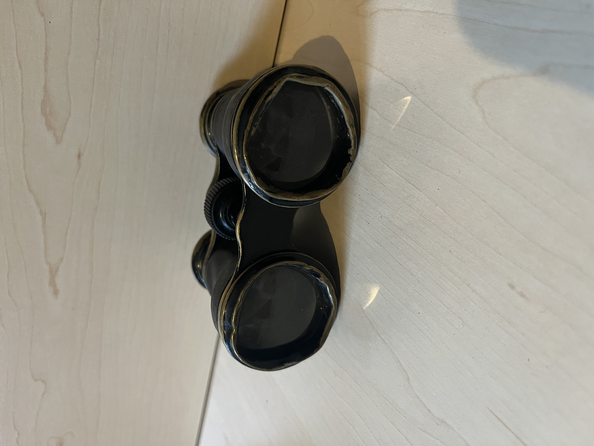
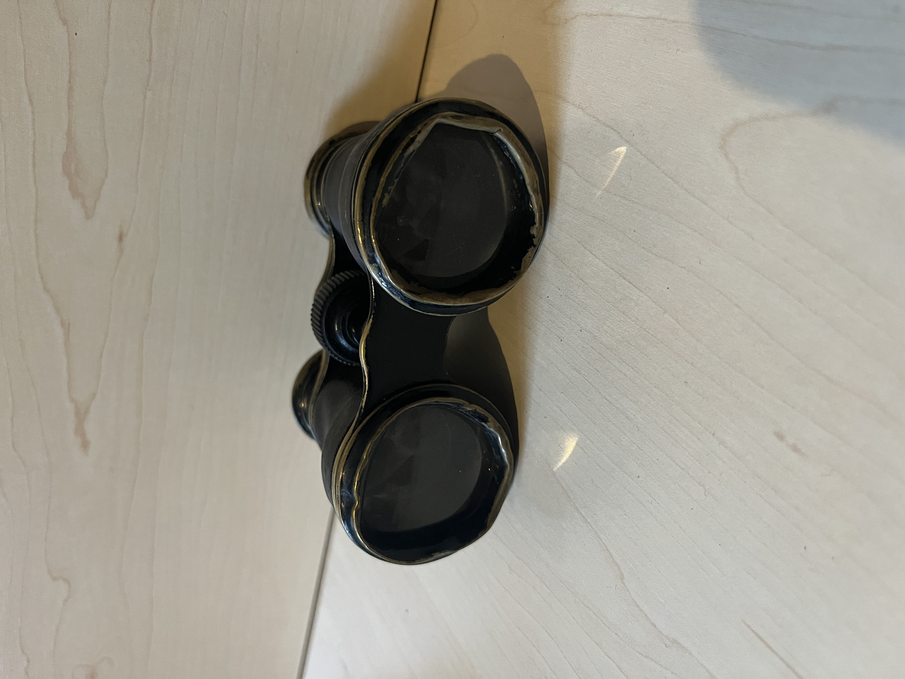

My binoculars
This collection is not as big as the visor cap one, but I still wanted to show it off. I'm not actively looking (pun not intended) for more binoculars, but if I randomly stumble upon field glasses from Austria-Hungary, then I think I will buy them.
This list is ordered from newest to oldest piece.
Field glass Svarovski cag 6x30 of my great grandfather who fought in WW2
I never met him, unfortunately. Apparently he was taken prisoner later in the war. These were his field glasses from the Austrian manufacturer "Svarovski", recognizable by the "cag" print on the left side. In acceptable condition. The color would suggest that he was somewhere in Africa. But that's not true. Due to the lack of black colour pigments, some companies painted equipment in sand-coloured from 1943 onwards. This is referred to as the "uniform colour of Europe". With the print "6x30", this binocular ensures a 6x magnification with 30 mm objectives. The blue triangle is a cold grease symbol. The instrument grease 6009 ensures the functionality of the mechanical settings from -40° to +50°Celsius. The serial number is 161473. The inscription H/6400 for the built-in reticle was usually engraved below the serial number on service glasses. On Swarovski service glasses, the inscription was omitted from the serial numbers 120700 onwards. The production can be dated between 1943-44.
Austrian binoculars from 1903
These were the first I got. The case is made of leather and looks like it's 122 years old. What a coincidence it is 122 years old. I can't find the exact model so I don't know how much magnification it has. It's not much so I think it was used for operas. Nonetheless, it's cool.
 
